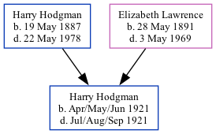

Harry J Hodgman 1921 - 1921 [ Home ] | [ Calendar ] | [ Surnames Index ] | [ Family History ]The child of Harry Hodgman (a farm houseman) and Elizabeth Lawrence , Harry Hodgman , the first cousin once-removed on the mother's side of Nigel Horne , was born in Eastry, Kent, England in Apr/may/jun 19211,2 .
He died in Eastry in Jul/aug/sep 19212 .
Parents Harry James was born on May 19, 1887Elizabeth Annie was born on May 28, 1891Citations England & Wales, Birth Index: 1916-2005 Online publication - Provo, UT, USA: The Generations Network, Inc., 2008.Original data - General Register Office. England and Wales Civil Registration Indexes. London, England: General Register Office. © Crown copyright. Published by permission of the Cont England & Wales, Death Index: 1984-2005 Online publication - Provo, UT, USA: The Generations Network, Inc., 2007.Original data - General Register Office. England and Wales Civil Registration Indexes. London, England: General Register Office. © Crown copyright. Published by permission of the Cont Family Tree Map
Generated by Ged2Site . Last updated on Jul 20, 2025